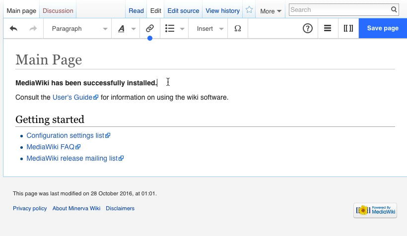

MediaWiki for Art Records
Fostering collaborative art documentation
Where to find MediaWiki
Your entry point to records:
The Artwork Record
- Descriptive: Provenance, fabrication, install parameters, condition,documentation, archival materials
- Contextual: Related works, influences, reception, interviews
- Together: Preserves meaning, supports exhibitions, enables long‑term care & scholarship

Our Goals
- Foster collaboration across teams
- Capture multi‑voice knowledge
- Serve the entire museum audience
- Accommodate traditional & non‑traditional art forms
- Create an experience people like to use
- Keep it approachable, easy, and low‑friction
- Use existing systems for their best purpose
- Keep the artwork at the center
Agenda
- Why Media Art Records matter
- Jim Campbell: key documentation themes
- MediaWiki basics (fast)
- Art Record template: structure & examples
- Mini‑lab: create your record
Digital Watch (1991) – Record Structure
Jim Campbell
Full record: mw.sfmoma.org/Digital_Watch
- Overview — object & acquisition
- Curatorial — interpretation & significance
- Technical — how it works
- History / Exhibitions — provenance & venues
- Equipment / Room / Install — setup & hardware
- Artist notes / Maintenance — care
- References — citations & docs
VisualEditor: 60‑second tour
- Headings structure the record
- Insert → Image for artworks & installs
- Link to related artists, exhibitions
- Cite to add references
Shortcuts: Ctrl/Cmd + K link, B bold, I italics.

Don’t see the toolbar? You’re in source view — click “Switch to visual editing”.
MediaWiki Basics (6 tools)
- VisualEditor (WYSIWYG) ↔ wikitext
- Links: [[Page name]]
- Files: [[File:Name.jpg|thumb|caption]]
- Categories: [[Category:Media art records]]
- Page history & diffs
- Talk pages for notes
Copy‑Paste Record Skeleton
[[File:Example-install.jpg|thumb|right|Installation view]]
{| class="wikitable"
! Artist Name || [[:Category:ArtistName|Artist Name]]
|-
! Artist Description || Nationality, born 19xx
|-
! Title || ''Title of Work''
|-
! Year || 20xx
|-
! Description || One-paragraph summary.
|-
! Credit Line || Gift of…
|-
! Accession Number || 20xx.x
|}
== Curatorial Description ==
== Technical Narrative ==
== Components ==
== Exhibitions ==
== Installation ==
File:Install-front.jpg
File:Install-back.jpg
== Iterations ==
== Manuals and Hardware Information ==
== Ingest & Checksums ==
== References ==
Mini‑Lab (30 min)
- Create page: Artwork:Jim Campbell/Title (Year)
- Paste the skeleton
- Fill the table (Artist, Title, Year, Credit, Accession)
- Add ≥ 2 images to the gallery
- Write Curatorial Description
- Add Categories: Media art records, Jim Campbell, 20XX
- Save with a clear Edit Summary
Past Examples
- Search "Category:Media art records"
- Search "Category:Jim Campbell"
- Open 2–3 prior records; note layout and level of detail
QA Checklist
- Info table complete (artist, title, year, credit, accession)
- At least one installation photo uploaded
- Curatorial and technical sections filled
- Components and iterations clearly listed
- Categories correct
- Edit summary used
Next Steps
- Finish draft record → curator review
- Link Exhibitions and Iterations to related records
- Use Talk pages for follow‑ups and approvals
Questions?